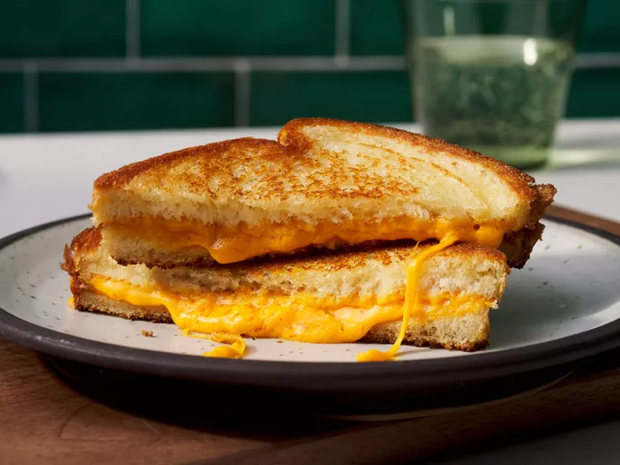

Cheese Sandwich

Description
This classic grilled cheese sandwich recipe calls for just white bread, sliced cheese, and butter.
It's easy to switch up the bread and cheese to suit your taste preferences and, if you like, you can substitute mayonnaise for butter.
Ingredients
- 4 slices white bread
- 3 tablespoons butter, divided
- 2 slices Cheddar cheese
Steps
- Gather all ingredients.
- Preheat a nonstick skillet over medium heat. Generously butter one side each bread slice.
- Place 1 slice bread, butter-side down, in the hot skillet; top with 1 slice cheese.
- Place 1 slice bread, butter-side up, on top cheese.
- Cook until lightly browned on one side; flip and continue cooking until cheese is melted.
- Repeat with remaining bread and cheese slices. Serve and enjoy!
Home